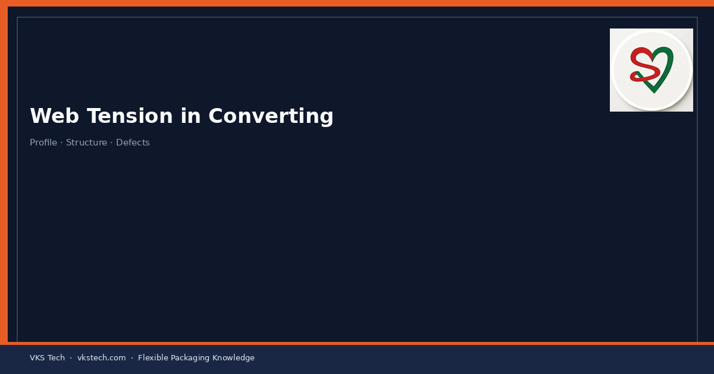
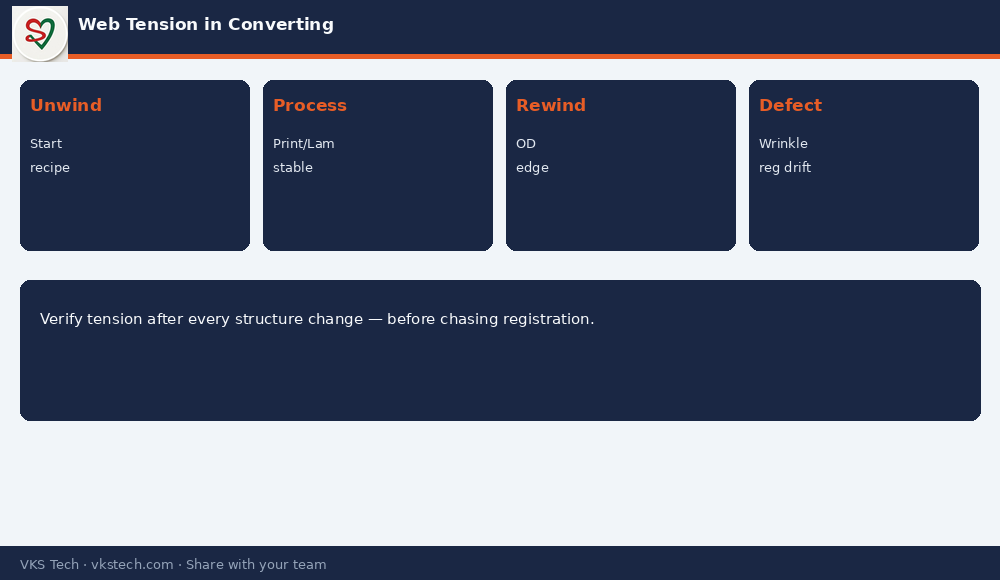

🎛️ Wrong Web Tension Does Not Always Break the Film. It Quietly Creates Wrinkles, Registration Drift and Soft Rolls.
📖 10-min read · Process control · Operators + PPC
Tension is the invisible setting that links every converting machine. Too high and you stretch or break thin films. Too low and you get wrinkles, telescoping and registration that never settles. This article is the plant view — what to set, what to watch, and what to log.
📌 Practical Rules
- Tension is not one number — it is a profile from unwind to rewind
- Thin films and heavy laminates need different recipes
- Change structure → re-check tension before chasing registration or wrinkles
- Log tension with job card; “same as yesterday” fails on new structures

Where Tension Shows Up as Defects
- Print: registration hunt, length variation
- Lam: wrinkles in the tunnel or at the nip
- Slit: telescoping, hard/soft edges, baggy centre
- Pouch: seal misalignment and feed issues
💡 Floor line: “If registration is unstable and tension was never verified after a structure change, fix tension first — not the registration knob.”
🎛️ गलत वेब टेंशन हमेशा फिल्म नहीं तोड़ता। यह चुपचाप झुर्रियाँ, रजिस्ट्रेशन ड्रिफ्ट और नरम रोल बनाता है।
📖 10-मिनट पढ़ें · प्रोसेस कंट्रोल · ऑपरेटर + PPC
टेंशन हर कन्वर्टिंग मशीन को जोड़ने वाला अदृश्य सेटिंग है। बहुत अधिक हो तो पतली फिल्म खिंचती/टूटती है। बहुत कम हो तो झुर्रियाँ, टेलीस्कोपिंग और अस्थिर रजिस्ट्रेशन आता है।
💡 फर्श लाइन: “अगर रजिस्ट्रेशन अस्थिर है और स्ट्रक्चर बदलने के बाद टेंशन चेक नहीं हुआ — पहले टेंशन ठीक करें।”